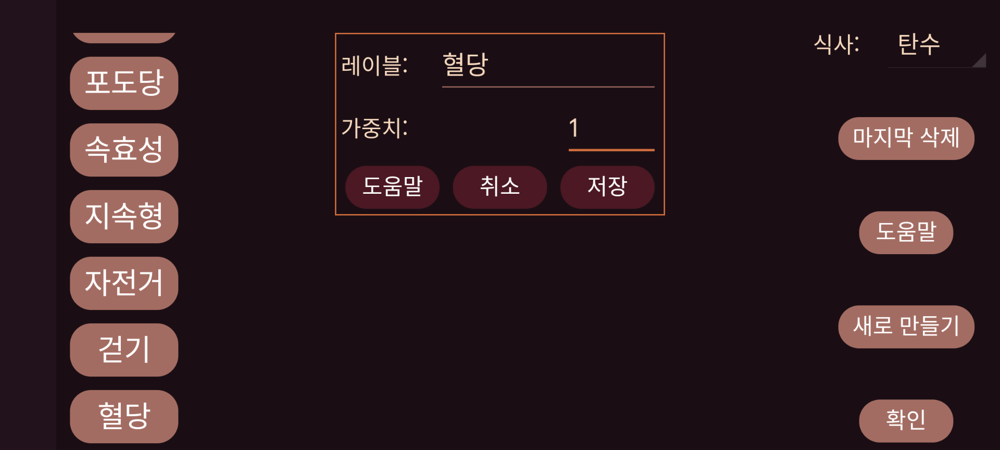

ar be de es fr hi it ja ko nl pl pt ru tr uk uz zh en
숫자를 입력할 때 사용할 레이블의 이름입니다. 왼쪽 가운데 메뉴의 "새 입력값"을 사용하면 특정 날짜와 시간에 연결된 숫자를 추가할 수 있습니다. 이 숫자는 해당 시간 위치의 혈당 그래프 또는 목록에 표시할 수 있습니다.
워치 앱 Kerfstok에서 사용됩니다. 이 레이블로 입력한 숫자는 이 값의 배수로 반올림됩니다.
0=전체 정밀도, 0.5=0.5의 배수로 반올림 등입니다.
0으로 설정하면 숫자의 값과 관계없이 그래프의 일정한 높이에 표시됩니다. 가중치가 0보다 크면 이 레이블로 입력한 각 입력값에 이 가중치를 곱하여 혈당 그래프와 같은 좌표계에 사각형으로 표시합니다. 예를 들어 가중치를 1로 설정하면 손끝 채혈 혈당 측정값을 혈당 센서 측정값과 같은 방식으로 표시할 수 있습니다.